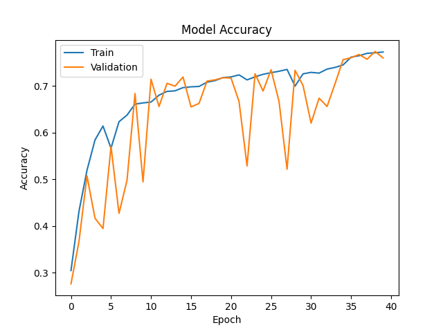
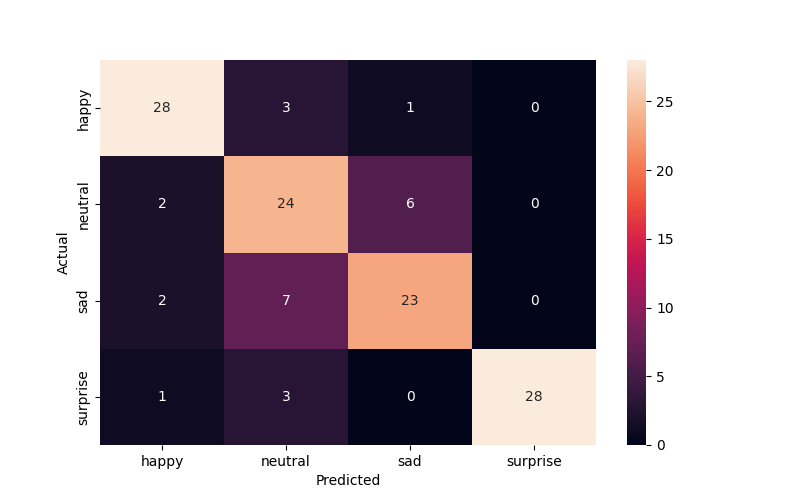
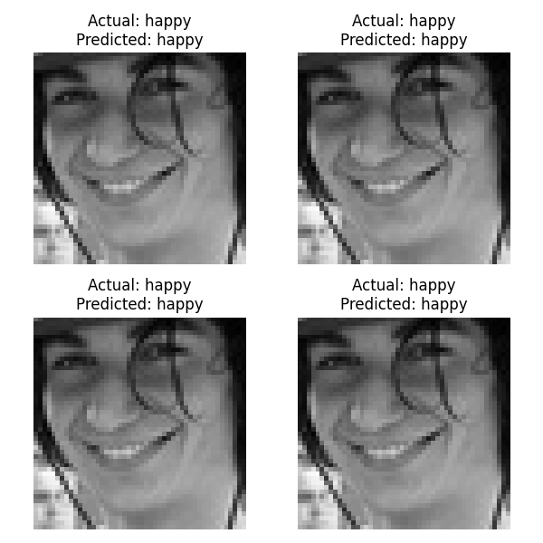

        <html>
        <head><title>Model Summary - 2024-04-10 14:04:10</title></head>
        <body>
        <h1>Model Configuration</h1>
        <pre>model:
  compile:
    learning_rate: 0.01
    optimizer: RMSprop
    optimizer_name: adam
  data:
    color_layers: 1
    color_mode: grayscale
    img_height: 48
    img_width: 48
    use_data_loaders: true
  layers:
  - filters: 64
    kernel_size:
    - 2
    - 2
    padding: same
    type: Conv2D
  - type: BatchNormalization
  - alpha: 0.1
    type: LeakyReLU
  - pool_size:
    - 2
    - 2
    type: MaxPooling2D
  - filters: 128
    kernel_size:
    - 2
    - 2
    padding: same
    type: Conv2D
  - type: BatchNormalization
  - alpha: 0.1
    type: LeakyReLU
  - pool_size:
    - 2
    - 2
    type: MaxPooling2D
  - filters: 256
    kernel_size:
    - 2
    - 2
    padding: same
    type: Conv2D
  - type: BatchNormalization
  - alpha: 0.1
    type: LeakyReLU
  - pool_size:
    - 2
    - 2
    type: MaxPooling2D
  - filters: 512
    kernel_size:
    - 2
    - 2
    padding: same
    type: Conv2D
  - type: BatchNormalization
  - alpha: 0.1
    type: LeakyReLU
  - pool_size:
    - 2
    - 2
    type: MaxPooling2D
  - filters: 128
    kernel_size:
    - 2
    - 2
    padding: same
    type: Conv2D
  - type: BatchNormalization
  - alpha: 0.1
    type: LeakyReLU
  - pool_size:
    - 2
    - 2
    type: MaxPooling2D
  - type: Flatten
  - activation: relu
    type: Dense
    units: 512
  - activation: relu
    type: Dense
    units: 128
  - type: Dense
    units: 64
  - type: BatchNormalization
  - type: ReLU
  - activation: softmax
    type: Dense
    units: 4
  train:
    batch_size: 128
    epochs: 40
    patience: 7
</pre>
        <h1>Model Summary</h1>
        <pre>Model: "sequential"
┏━━━━━━━━━━━━━━━━━━━━━━━━━━━━━━━━━━━━━━┳━━━━━━━━━━━━━━━━━━━━━━━━━━━━━┳━━━━━━━━━━━━━━━━━┓
┃ Layer (type)                         ┃ Output Shape                ┃         Param # ┃
┡━━━━━━━━━━━━━━━━━━━━━━━━━━━━━━━━━━━━━━╇━━━━━━━━━━━━━━━━━━━━━━━━━━━━━╇━━━━━━━━━━━━━━━━━┩
│ conv2d (Conv2D)                      │ (None, 48, 48, 64)          │             320 │
├──────────────────────────────────────┼─────────────────────────────┼─────────────────┤
│ batch_normalization                  │ (None, 48, 48, 64)          │             256 │
│ (BatchNormalization)                 │                             │                 │
├──────────────────────────────────────┼─────────────────────────────┼─────────────────┤
│ leaky_re_lu (LeakyReLU)              │ (None, 48, 48, 64)          │               0 │
├──────────────────────────────────────┼─────────────────────────────┼─────────────────┤
│ max_pooling2d (MaxPooling2D)         │ (None, 24, 24, 64)          │               0 │
├──────────────────────────────────────┼─────────────────────────────┼─────────────────┤
│ conv2d_1 (Conv2D)                    │ (None, 24, 24, 128)         │          32,896 │
├──────────────────────────────────────┼─────────────────────────────┼─────────────────┤
│ batch_normalization_1                │ (None, 24, 24, 128)         │             512 │
│ (BatchNormalization)                 │                             │                 │
├──────────────────────────────────────┼─────────────────────────────┼─────────────────┤
│ leaky_re_lu_1 (LeakyReLU)            │ (None, 24, 24, 128)         │               0 │
├──────────────────────────────────────┼─────────────────────────────┼─────────────────┤
│ max_pooling2d_1 (MaxPooling2D)       │ (None, 12, 12, 128)         │               0 │
├──────────────────────────────────────┼─────────────────────────────┼─────────────────┤
│ conv2d_2 (Conv2D)                    │ (None, 12, 12, 256)         │         131,328 │
├──────────────────────────────────────┼─────────────────────────────┼─────────────────┤
│ batch_normalization_2                │ (None, 12, 12, 256)         │           1,024 │
│ (BatchNormalization)                 │                             │                 │
├──────────────────────────────────────┼─────────────────────────────┼─────────────────┤
│ leaky_re_lu_2 (LeakyReLU)            │ (None, 12, 12, 256)         │               0 │
├──────────────────────────────────────┼─────────────────────────────┼─────────────────┤
│ max_pooling2d_2 (MaxPooling2D)       │ (None, 6, 6, 256)           │               0 │
├──────────────────────────────────────┼─────────────────────────────┼─────────────────┤
│ conv2d_3 (Conv2D)                    │ (None, 6, 6, 512)           │         524,800 │
├──────────────────────────────────────┼─────────────────────────────┼─────────────────┤
│ batch_normalization_3                │ (None, 6, 6, 512)           │           2,048 │
│ (BatchNormalization)                 │                             │                 │
├──────────────────────────────────────┼─────────────────────────────┼─────────────────┤
│ leaky_re_lu_3 (LeakyReLU)            │ (None, 6, 6, 512)           │               0 │
├──────────────────────────────────────┼─────────────────────────────┼─────────────────┤
│ max_pooling2d_3 (MaxPooling2D)       │ (None, 3, 3, 512)           │               0 │
├──────────────────────────────────────┼─────────────────────────────┼─────────────────┤
│ conv2d_4 (Conv2D)                    │ (None, 3, 3, 128)           │         262,272 │
├──────────────────────────────────────┼─────────────────────────────┼─────────────────┤
│ batch_normalization_4                │ (None, 3, 3, 128)           │             512 │
│ (BatchNormalization)                 │                             │                 │
├──────────────────────────────────────┼─────────────────────────────┼─────────────────┤
│ leaky_re_lu_4 (LeakyReLU)            │ (None, 3, 3, 128)           │               0 │
├──────────────────────────────────────┼─────────────────────────────┼─────────────────┤
│ max_pooling2d_4 (MaxPooling2D)       │ (None, 1, 1, 128)           │               0 │
├──────────────────────────────────────┼─────────────────────────────┼─────────────────┤
│ flatten (Flatten)                    │ (None, 128)                 │               0 │
├──────────────────────────────────────┼─────────────────────────────┼─────────────────┤
│ dense (Dense)                        │ (None, 512)                 │          66,048 │
├──────────────────────────────────────┼─────────────────────────────┼─────────────────┤
│ dense_1 (Dense)                      │ (None, 128)                 │          65,664 │
├──────────────────────────────────────┼─────────────────────────────┼─────────────────┤
│ dense_2 (Dense)                      │ (None, 64)                  │           8,256 │
├──────────────────────────────────────┼─────────────────────────────┼─────────────────┤
│ batch_normalization_5                │ (None, 64)                  │             256 │
│ (BatchNormalization)                 │                             │                 │
├──────────────────────────────────────┼─────────────────────────────┼─────────────────┤
│ re_lu (ReLU)                         │ (None, 64)                  │               0 │
├──────────────────────────────────────┼─────────────────────────────┼─────────────────┤
│ dense_3 (Dense)                      │ (None, 4)                   │             260 │
└──────────────────────────────────────┴─────────────────────────────┴─────────────────┘
 Total params: 1,096,452 (4.18 MB)
 Trainable params: 1,094,148 (4.17 MB)
 Non-trainable params: 2,304 (9.00 KB)
</pre>
        <h2>Test Accuracy</h2>
        <p>
1/1 ━━━━━━━━━━━━━━━━━━━━ 0s 33ms/step - accuracy: 0.8047 - loss: 0.5382
1/1 ━━━━━━━━━━━━━━━━━━━━ 0s 34ms/step - accuracy: 0.8047 - loss: 0.5382

1/1 ━━━━━━━━━━━━━━━━━━━━ 0s 319ms/step
1/1 ━━━━━━━━━━━━━━━━━━━━ 0s 319ms/step
</p>
        <h2>Accuracy Plot</h2>
        
        <h2>Classification Report</h2>
        <pre>              precision    recall  f1-score   support

       happy       0.85      0.88      0.86        32
     neutral       0.65      0.75      0.70        32
         sad       0.77      0.72      0.74        32
    surprise       1.00      0.88      0.93        32

    accuracy                           0.80       128
   macro avg       0.82      0.80      0.81       128
weighted avg       0.82      0.80      0.81       128

</pre>
        <h2>History</h2>
        <pre>Epoch 1: accuracy: 0.3044, loss: 1.3681, val_accuracy: 0.2759, val_loss: 1.5825, learning_rate: 0.0100
Epoch 2: accuracy: 0.4313, loss: 1.2074, val_accuracy: 0.3667, val_loss: 1.8579, learning_rate: 0.0100
Epoch 3: accuracy: 0.5192, loss: 1.0704, val_accuracy: 0.5071, val_loss: 1.1971, learning_rate: 0.0100
Epoch 4: accuracy: 0.5841, loss: 0.9610, val_accuracy: 0.4165, val_loss: 1.7062, learning_rate: 0.0100
Epoch 5: accuracy: 0.6141, loss: 0.9154, val_accuracy: 0.3944, val_loss: 1.9459, learning_rate: 0.0100
Epoch 6: accuracy: 0.5665, loss: 1.0052, val_accuracy: 0.5702, val_loss: 1.1084, learning_rate: 0.0100
Epoch 7: accuracy: 0.6233, loss: 0.8958, val_accuracy: 0.4270, val_loss: 1.7637, learning_rate: 0.0100
Epoch 8: accuracy: 0.6374, loss: 0.8628, val_accuracy: 0.4977, val_loss: 1.3434, learning_rate: 0.0100
Epoch 9: accuracy: 0.6610, loss: 0.8078, val_accuracy: 0.6835, val_loss: 0.7621, learning_rate: 0.0100
Epoch 10: accuracy: 0.6635, loss: 0.8071, val_accuracy: 0.4945, val_loss: 1.1125, learning_rate: 0.0100
Epoch 11: accuracy: 0.6654, loss: 0.8059, val_accuracy: 0.7143, val_loss: 0.7013, learning_rate: 0.0100
Epoch 12: accuracy: 0.6801, loss: 0.7784, val_accuracy: 0.6558, val_loss: 0.8403, learning_rate: 0.0100
Epoch 13: accuracy: 0.6882, loss: 0.7495, val_accuracy: 0.7054, val_loss: 0.7223, learning_rate: 0.0100
Epoch 14: accuracy: 0.6894, loss: 0.7451, val_accuracy: 0.6994, val_loss: 0.7519, learning_rate: 0.0100
Epoch 15: accuracy: 0.6963, loss: 0.7431, val_accuracy: 0.7191, val_loss: 0.6937, learning_rate: 0.0100
Epoch 16: accuracy: 0.6980, loss: 0.7191, val_accuracy: 0.6550, val_loss: 0.7987, learning_rate: 0.0100
Epoch 17: accuracy: 0.6988, loss: 0.7207, val_accuracy: 0.6624, val_loss: 0.8580, learning_rate: 0.0100
Epoch 18: accuracy: 0.7080, loss: 0.7041, val_accuracy: 0.7103, val_loss: 0.7051, learning_rate: 0.0100
Epoch 19: accuracy: 0.7113, loss: 0.7025, val_accuracy: 0.7129, val_loss: 0.7175, learning_rate: 0.0100
Epoch 20: accuracy: 0.7178, loss: 0.6829, val_accuracy: 0.7175, val_loss: 0.6867, learning_rate: 0.0100
Epoch 21: accuracy: 0.7192, loss: 0.6868, val_accuracy: 0.7169, val_loss: 0.7172, learning_rate: 0.0100
Epoch 22: accuracy: 0.7236, loss: 0.6684, val_accuracy: 0.6665, val_loss: 0.8174, learning_rate: 0.0100
Epoch 23: accuracy: 0.7128, loss: 0.6968, val_accuracy: 0.5286, val_loss: 1.2314, learning_rate: 0.0100
Epoch 24: accuracy: 0.7194, loss: 0.6809, val_accuracy: 0.7259, val_loss: 0.6615, learning_rate: 0.0100
Epoch 25: accuracy: 0.7248, loss: 0.6599, val_accuracy: 0.6890, val_loss: 0.7631, learning_rate: 0.0100
Epoch 26: accuracy: 0.7283, loss: 0.6707, val_accuracy: 0.7346, val_loss: 0.6778, learning_rate: 0.0100
Epoch 27: accuracy: 0.7314, loss: 0.6742, val_accuracy: 0.6665, val_loss: 0.8078, learning_rate: 0.0100
Epoch 28: accuracy: 0.7353, loss: 0.6523, val_accuracy: 0.5216, val_loss: 1.2844, learning_rate: 0.0100
Epoch 29: accuracy: 0.6996, loss: 0.7346, val_accuracy: 0.7334, val_loss: 0.6504, learning_rate: 0.0100
Epoch 30: accuracy: 0.7259, loss: 0.6700, val_accuracy: 0.7006, val_loss: 0.7405, learning_rate: 0.0100
Epoch 31: accuracy: 0.7290, loss: 0.6603, val_accuracy: 0.6203, val_loss: 0.9069, learning_rate: 0.0100
Epoch 32: accuracy: 0.7274, loss: 0.6757, val_accuracy: 0.6737, val_loss: 0.8370, learning_rate: 0.0100
Epoch 33: accuracy: 0.7360, loss: 0.6584, val_accuracy: 0.6558, val_loss: 0.8930, learning_rate: 0.0100
Epoch 34: accuracy: 0.7396, loss: 0.6391, val_accuracy: 0.7050, val_loss: 0.7571, learning_rate: 0.0100
Epoch 35: accuracy: 0.7449, loss: 0.6297, val_accuracy: 0.7561, val_loss: 0.5882, learning_rate: 0.0020
Epoch 36: accuracy: 0.7616, loss: 0.5941, val_accuracy: 0.7603, val_loss: 0.5884, learning_rate: 0.0020
Epoch 37: accuracy: 0.7646, loss: 0.5886, val_accuracy: 0.7673, val_loss: 0.5927, learning_rate: 0.0020
Epoch 38: accuracy: 0.7697, loss: 0.5708, val_accuracy: 0.7571, val_loss: 0.6185, learning_rate: 0.0020
Epoch 39: accuracy: 0.7710, loss: 0.5632, val_accuracy: 0.7738, val_loss: 0.5763, learning_rate: 0.0020
Epoch 40: accuracy: 0.7726, loss: 0.5681, val_accuracy: 0.7599, val_loss: 0.5980, learning_rate: 0.0020
</pre>
        <h2>Confusion Matrix</h2>
        
        <h2>Predicted Images</h2>
        
        </body>
        </html>
        